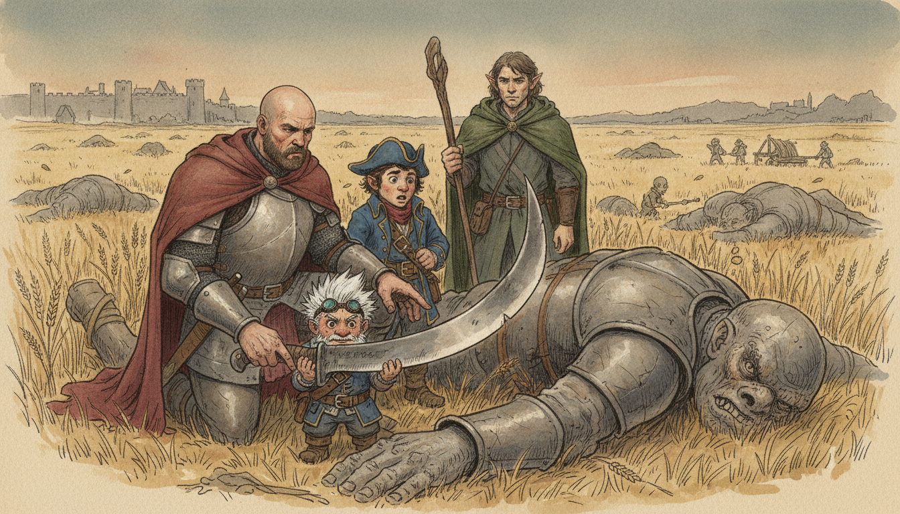
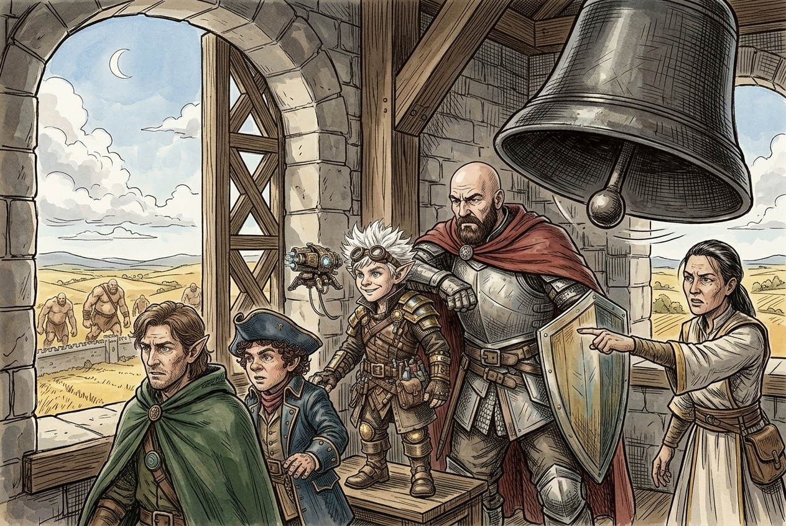
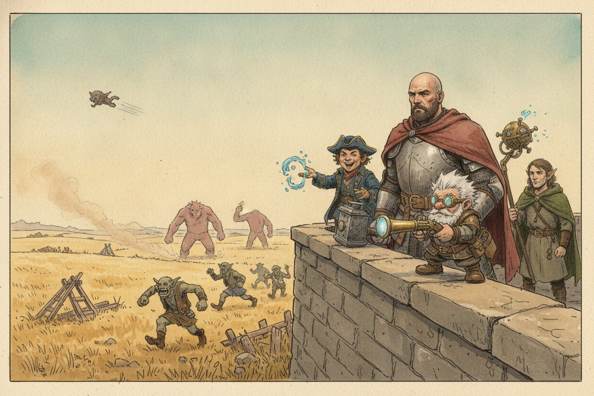
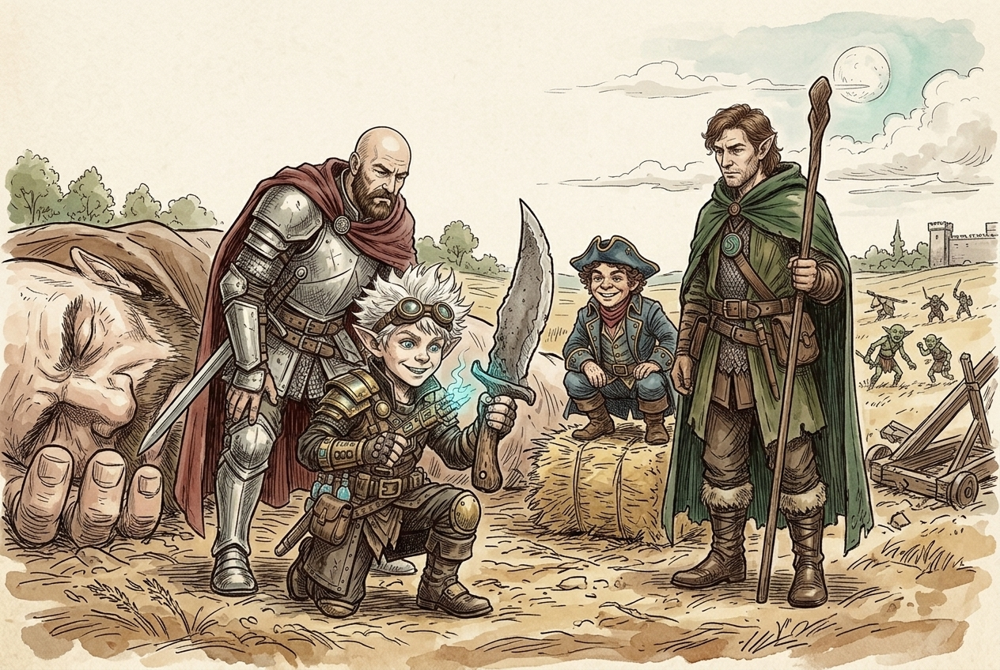

Session 2026-06-02

In brief: Golden Fields takes its second raid since the crew arrived, and an insight check reveals what the hill giants are actually after.
The bell

The session opened with the Golden Fields town bell hammering out an alarm. The crew turned the villagers toward the abbey — the abbot quickly patched two of them up — and made for the bell tower. A woman with them broke off to help the town guards; the crew followed her up.
On the walls

From the top of the wall the crew saw the threat coming: hill giants striding toward Golden Fields with goblins and orcs as their auxiliaries. The orcs were hauling makeshift catapults — not for stones, but for goblins: they were launching them over the wall as living warheads.
The crew fought the giants and won. By the time the dust settled the surviving goblins and orcs were fleeing back into the fields.
The skinning knife

Among the corpses the party found a giant-sized skinning knife — far too large for a humanoid hand, the kind of tool a giant butcher would carry.
An insight check on the larger picture revealed the truth of these raids: the hill giants are not making war for war's sake. They are gathering food to bring to their queen, Guh. The bugbears, the catapults, the goblin warheads — all of it is in service to one hungry mountain of a giantess somewhere out there.
What's next
- Find Queen Guh, and figure out why she's gathering.
- Golden Fields is, for now, holding.
Original session notes (Fiz's POV)
Town bell ringing, tell villagers to get to abbey, abbot heals two of us.
we follow Zi Liang, Acolyte of Chauntea, up to the bell tower to get a better view of what's going on. The sound of the bells is deafening. We see giants are coming over walls. Zi says she must go help guards, we follow. We run across the field toward where the giants are, haystack to haystack to avoid being seen.
We battle two giants. Goblins in spiked helmets are being launched over the walls at us, splattering on the ground when they hit. We defeat the giants after a long battle. We climb to the top of wall to see what's going on on the other side. We see goblins and orcs fleeing, the orcs carrying catapults that they used to launch the spike helmetted goblins.
Fiz finds a giant sized skinning knife
Insight check tells us all hill giants care about is gathering food and bringing it to their queen named Guh.